Remove families that do not earn their own player response. Put self-destruction inside Charger. Put artillery and slowing shots inside Gunner. Show only three tier images per family and scale tiers with integer percentages.
Decision: use Pursuer, Charger, Gunner, Defender, and Coordinator. Give each family only two launch traits. Show T1, T2, and T3 only. Use 100%, 125%, and 150% visual scale. Do not merge the remote pursuit branch as-is.
Family count5, down from 9
Trait limit2 per family
Visual source3 tier PNGs per family
Plan basisCommit 21f0d3f9
Comments stay in this browser until you copy or clear them.
Answer first
1. The old nine-family plan becomes five families
Keep5 families
Remove3 families
Merge1 family
Launch traits10 total
Old idea
New decision
Reason
Code effect
Controller family
Remove
Its current units do not form a strong, clear family.
Delete Controller actor IDs after stage and Guidebook replacement.
Sustainer family
Remove
There are already many families. Repair units do not need a full launch family.
Delete repair/support actor IDs and unused fixed support data.
Bomber family
Move
Self-destruction works better as a Charger variation.
Move the fuse and explosion to Charger. Delete the Bomber-style ID.
Artillery family
Merge
It is still a ranged unit. The shot pattern is the main difference.
Make Artillery one Gunner trait. Delete the separate Artillery ID.
Overload trait
Replace
Self-Destruct gives Charger a clearer danger and response.
Remove ordinary_overload_01 after roster migration.
Simple rule: a family changes how the player moves or chooses a target. A trait changes one part of that family. If an idea only changes one attack, it should be a trait, not a new family.
No saved comment
This file does not send comments to a server.
Remote code review
2. The pursuit branch should not be merged as one block
What the branch does
The branch makes each mobile enemy chase the player's current position. It removes prediction from movement. It also removes many range, orbit, retreat, escort, and support rules.
3 commitstip: bd9f72f7base: 4d6bb2dc
Current merge state
The remote-tracking branch is three commits ahead of its base. Local master has separately diverged from that base. A merge-tree check found no structural conflict signal, but the product design still conflicts.
Text merge looks possibleDesign merge is not valid
Performance answer: no, this remote branch did not propose game-wide performance work. Its own ExecPlan says profiler and full-load performance claims are out of scope. This ordinary-enemy ExecPlan uses only its movement ideas. The performance rules below come from Cardborne's separate performance policy and runtime architecture audit.
Reuse bounded pack state; move only invariant work out of member loops
Performance policy and architecture audit
Allowed only with the same actor, projectile, collision, cadence, and attack workload.
Clean baseline and named subsystem timing before a performance claim
Performance policy
Required before saying the restructure is faster.
Renderer, projectile collision, HUD staging, and VehicleRun extraction
Separate performance plans
Out of scope for this ordinary-enemy restructure.
Reuse later
Move a pack anchor toward the player's current position.
Ask for route guidance only when the direct path is blocked.
Keep local separation, speed limits, and smooth velocity.
Keep attack prediction separate from movement.
Do not reuse
Do not make every member chase the player alone.
Do not remove Gunner distance and Defender formation space.
Do not remove escort and support position ownership before packs replace it.
Do not accept the branch document as the new product rule.
No saved comment
Visual input
3. Every family shows exactly three tier PNGs
This report follows ExecPlan commit 21f0d3f9. Each family card contains one T1 PNG, one T2 PNG, and one T3 PNG. It does not show trait thumbnails, current production enemies, the full lineup sheet, or the old nine-cell matrix.
T1 · 100%
The family baseline. This is the source for relative size.
T2 · 125%
The same family reads 25% larger than T1.
T3 · 150%
The same family reads 50% larger than T1.
Coordinator change: the orange triangular trio is removed. Coordinator now uses the simpler circular trio from the removed Bomber visual cell. This reuses only the simple shape. It does not give Coordinator a fuse, explosion, or Bomber behavior.
Visual status: the 15 displayed files are exact report-only crops from enemy-tier-family-lineup.png. No silhouette was redrawn. They are concept evidence, not approved production assets.
No saved comment
Family contract
4. Each family has one base job and two traits
A pack gets one main family and one tier. A unit has at most one active trait. The two names below are the full launch pool, not two traits that run at the same time.
01 · PURSUER
Keep moving and protect escape space
Pursuer is the simple close-range pressure family. It follows the pack target and tries to close space. It must not receive armor or heavy-defense traits because Defender owns that job.
Splitter
On its approved trigger, it creates a small number of weaker Pursuers. Child units cannot create an endless split chain.
Frenzy
It gains a short, readable speed or attack boost after commitment. The boost has a cap and a clear end.
Current seeds: ordinary_melee_01, ordinary_pulse_01.
No Armored, Heavy, Leech, or hidden defense state.
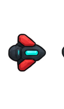
T1 · 100%
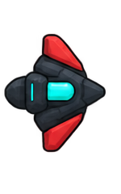
T2 · 125%
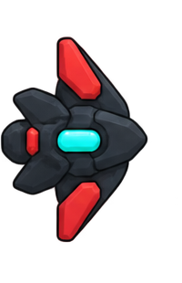
T3 · 150%
Three report-only tier crops. No trait image.
No saved comment
02 · CHARGER
Read the lane, dodge sideways, then punish recovery
Charger warns, locks a lane, and rushes through it. Self-destruction now belongs here. Bomber is no longer a family. Overload is removed.
Double
After the first charge and its recovery, it can make one second warned charge. It cannot loop forever.
Self-Destruct
After its charge ends, it starts a short visible fuse. It then explodes and dies. A kill before fuse commitment should stop the explosion.
Current seeds: ordinary_edge_01, ordinary_pull_01, and the fuse/explosion from ordinary_area_01.
ordinary_overload_01 is deleted after roster migration.
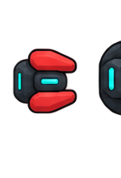
T1 · 100%
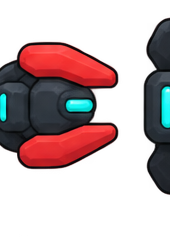
T2 · 125%
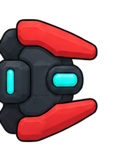
T3 · 150%
Three report-only tier crops. No trait image.
No saved comment
03 · GUNNER
Break a fire lane or leave a marked impact area
Gunner includes normal shooting and artillery. Artillery is not a separate family. Every Gunner pack has a Defender, including Artillery and Slow variants.
Artillery
Replace direct fire with a marked lobbed or ground-impact shot. The mark must appear before damage.
Slow
A bullet hit slows the player for a short time. More hits refresh one bounded slow. They do not stack into a movement lock.
Current seeds: ranged, lane, range, beam, growth, and ground-impact attack code.
The Slow projectile needs a distinct cue before it can ship.
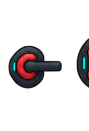
T1 · 100%
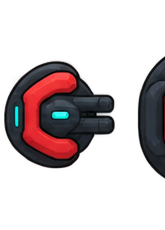
T2 · 125%
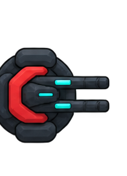
T3 · 150%
Three report-only tier crops. No trait image.
No saved comment
04 · DEFENDER
Change the player's firing angle and target order
Defender has a normal, breakable shield as its base state. Its traits are timed power windows. Neither trait stays at full power all the time.
Bulwark
Every M seconds, it grows for N seconds. Its large shield also protects nearby pack members. Growth and shield range appear before protection starts.
Reflector
It uses a normal shield most of the time. Every M seconds, a warned N-second window makes that shield reflect shots.
Current seeds: ordinary_shield_01, ordinary_reflect_01, and useful shield parts from ordinary_support_02.
Reflection must have a different edge, pulse, or color state. It cannot be hidden.
T1 · 100%
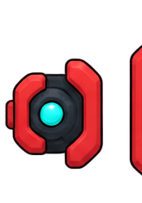
T2 · 125%
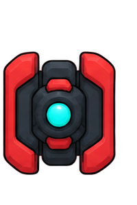
T3 · 150%
Three report-only tier crops. No trait image.
No saved comment
05 · COORDINATOR
Break the pack-level tactic source
Coordinator changes the pack, not only itself. Keep the launch pool small. Blink stays. Pack Feed (몰아주기) uses the bounded death-stack idea, but the pack owns the state.
Blink
Warn, check a safe destination, then move the pack while keeping its formation. Never blink into the player, cover, or another unit.
Pack Feed (몰아주기)
When an eligible pack member dies, survivors heal and gain a bounded boost. Summons do not feed it. Killing the Coordinator stops future gains.
Current seeds: the shared collective tactic runtime and the bounded death stack in ordinary_melee_02.
Invisible and Shrink stay future-only. Like Rock is excluded because Defender owns defense.
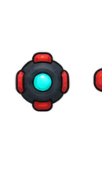
T1 · 100%
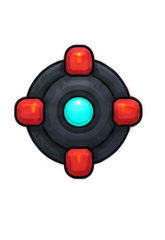
T2 · 125%
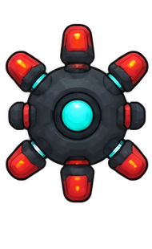
T3 · 150%
Simpler circular trio. The old orange triangular trio is rejected.
No saved comment
Spawn and formation
5. Build and admit enemies as complete packs
One pack, one contract
A pack owns its family, tier, active trait, leader, members, formation, target, and shared cooldown. Each actor still owns health, collision, damage, and rendering.
Atomic spawn
Spawn, delay, replace, or cancel the full pack. Do not create a Gunner first and wait for its Defender later.
Same threat budget
A required Defender replaces a filler slot. It does not increase the actor count or the authored threat budget.
Hard rule: every pack with a Gunner has at least one Defender. This includes a direct-fire Gunner, an Artillery-trait Gunner, and a Slow-trait Gunner. There is no Artillery exception.
Example pack
Front or flank
Rear
Why it works
Direct fire
Defender + Pursuer filler
Direct-fire Gunners
Player can break the shield angle, then attack the firing line.
Artillery
Defender
Artillery-trait Gunners
The Defender buys time, but marked impact zones still give movement counterplay.
Slow fire
Defender + close-range filler
Slow-trait Gunners
Slow cannot stack. The Defender is the first target-priority problem.
Coordinator
Family-safe fillers
Coordinator in a readable slot
Player can find and kill the source before Blink or Pack Feed grows the threat.
No saved comment
Code cleanup
6. Move useful behavior, then delete old IDs and all consumers
The current code defines 26 ordinary enemy archetypes. Eighteen mobile IDs can appear in the campaign. One fixed beam can appear only as a boss summon. Seven definitions do not appear in the normal campaign. These IDs still have Guidebook, visual, combat, fixture, or test references, so deletion must happen as a complete migration.
Current item
Action
What may survive
Safe delete condition
gap_01, compression_01
Delete Controller IDs
No family state. Only a generic warning or impact helper if Gunner needs it.
Stages, Guidebook, visuals, localization, tests, and fixtures use five-family replacements.
sweep_01
Move then delete
Generic marked ground-impact code may support Gunner Artillery.
The actor ID and Controller-style presentation have no consumers.
support_01, fixed_support_01
Delete Sustainer IDs
No ordinary repair family.
Boss add rosters and support branches use approved replacements.
support_02
Move then delete
Only useful shield logic moves to Defender Bulwark.
Bulwark tests replace prototype tests.
support_03
Delete carrier actor
Pack coordination stays in the shared pack runtime.
Coordinator no longer needs child-spawn behavior.
melee_02
Move then delete
Bounded death-stack receipt moves to Pack Feed.
Pack-level cap, summon exclusion, and duplicate-receipt tests pass.
area_01, fixed_area_01
Move then delete
Readable fuse and explosion move to Charger Self-Destruct.
Stage 12 and vulnerability logic use Charger trait data.
resonance_01
Delete
Nothing in the two-trait Gunner launch pool.
Its stage slots have Artillery or Slow replacements.
fixed_ranged_01, fixed_ranged_02
Delete inactive ordinary IDs
Nothing unless a later tower-defense expansion creates a new, separate installation catalog.
All current consumers are audited and removed.
Do not delete only the catalog row. Each retired ID also needs stage and boss references, movement and attack branches, Guidebook entries, Korean and English keys, visual descriptors, semantic asset records, fixtures, validators, and tests removed or migrated in the same change.
No saved comment
Readability
7. Grow ordinary enemies with integer percentages
T1 · 100%
The family baseline visual size. Keep the base family shape simple.
T2 · 125%
Exactly 25% larger than that family's T1 visual. Add at most one large module.
T3 · 150%
Exactly 50% larger than T1. Keep facing and trait state readable.
Data rule: store the integer values 100, 125, and 150 as size_percent. Convert to a render scale only at the presentation boundary. Do not store absolute tier pixels.
Tier changes size, health, and threat budget. It does not add a second active trait.
Family shape must remain clear at T1, T2, and T3.
Visual scale, projectile-hit radius, and body collision remain separate owners.
Bulwark's short growth state is a separate timed percentage modifier, not T4.
Test mixed 4–8 member packs at desktop and narrow Web sizes before art approval.
No saved comment
Implementation path
8. Prove one ranged pack before the full rewrite
Step
Change
Proof
Stop if
1 · Data
Add family, tier, trait, and pack data. Store integer size_percent values 100 / 125 / 150. Separate visual and collision size ownership.
Validators reject unknown families, invalid percentages, more than two family traits, two active traits, or a Gunner without Defender.
Old actor IDs or absolute tier pixels still control the new rules.
2 · First pack
Build direct-fire Gunner + Defender as one complete pack.
No orphan Gunner, stable formation, clear firing and shield cues.
Actor count or threat budget grows.
3 · Gunner traits
Add Artillery, then Slow.
Marked impact is fair; Slow does not stack; both packs include Defender.
The player cannot tell the projectile or impact type.
4 · Defender traits
Add timed Bulwark growth and timed Reflector state.
Normal, large-shield, and reflection states are easy to tell apart.
Protection begins before its warning or hides the Gunner attack.
5 · Charger
Move fuse/explosion to Self-Destruct and remove Overload.
Charge, fuse, blast, death, and early-kill counterplay are deterministic.
The blast can happen without a clear fuse.
6 · Coordinator
Add Blink and Pack Feed only.
Safe destination, formation, cap, summon exclusion, and source-death tests pass.
Invisible, Shrink, or Like Rock enters the launch scope.
7 · Cleanup
Migrate stages and delete old IDs plus every consumer.
Twelve-cycle, boss add, Guidebook, localization, semantic asset, fixture, and spawn tests pass.
A reachable encounter loses an enemy without replacement.
8 · Runtime proof
Compare the same actor, projectile, effect, collision, and cadence workload.
Named native and built-Web checks pass at the clean checkpoint.
The test reduces workload or has no clean baseline.
First implementation slice: one Gunner pack with one Defender. Add Artillery and Slow only after the base formation and shield rules work. This is the smallest slice that proves the most important new contract.
No saved comment
Trust boundary
9. Evidence and limits
Plan basis:.agents/execplans/2026-08-20-ordinary-enemy-family-and-pack-restructure.md at commit 21f0d3f9. The plan was updated and committed before this report revision.
Current code: enemy archetypes, combat stages, boss add rosters, spawn allocation, collective tactic runtime, movement policy, specialist behavior, attack contracts, Guidebook data, visual catalog, assets, fixtures, and validators were traced in the earlier branch review.
Readability reference:Riot · Clarity in League. It supports distinct shapes, clear visual priority, and effects that match gameplay impact.
Visual authority:docs/design/VISUAL_SYSTEM.md SHA-256 2e5cf7e3f156629bcbe956da0e6cb30f6d3b608d9c20122ec5285fa1562aa006; universal style reference SHA-256 96ccf5d053e66dd3a102ccdf39daefd0b0c54b0e88d20428b7ba1c894f002889. The hashes were unchanged for this revision.
Tier PNG provenance: the 15 family images are exact, non-creative crops from enemy-tier-family-lineup.png, SHA-256 47dc723c6349336725dece97e672d5a1c3949e17be355bce9e0b17895151fe18. The crop operation also loaded and hash-checked the canonical visual reference. No silhouette, color, lighting, module, or effect was drawn or repaired.
Limits: this is a code, document, Git, and visual-reference report. It does not change game code. It does not prove that the pack design is more fun or faster. Those claims need a playable slice and a matching runtime baseline.
This file does not send comments to a server.